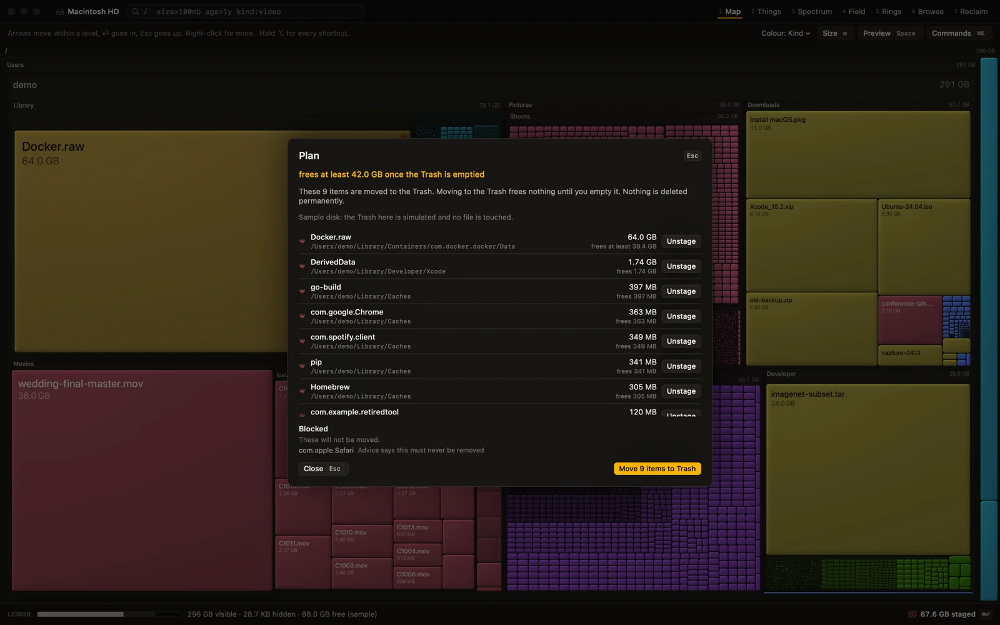
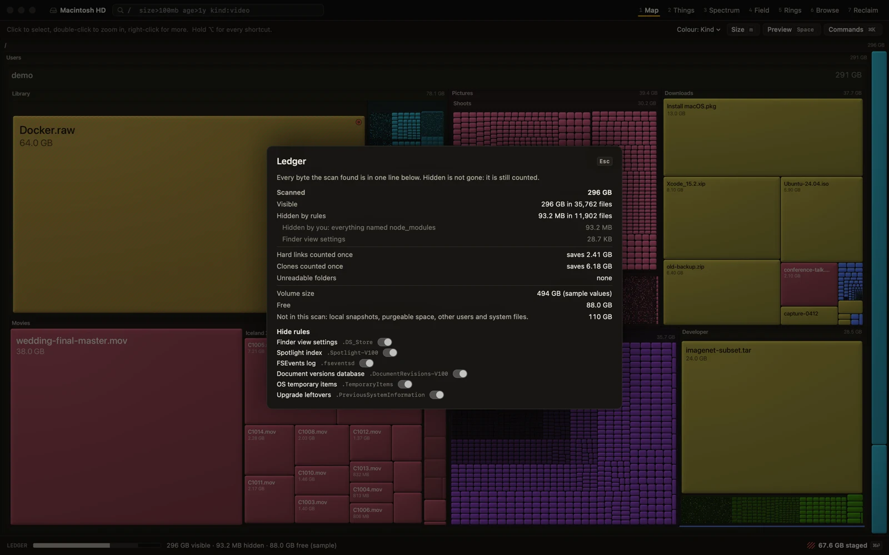
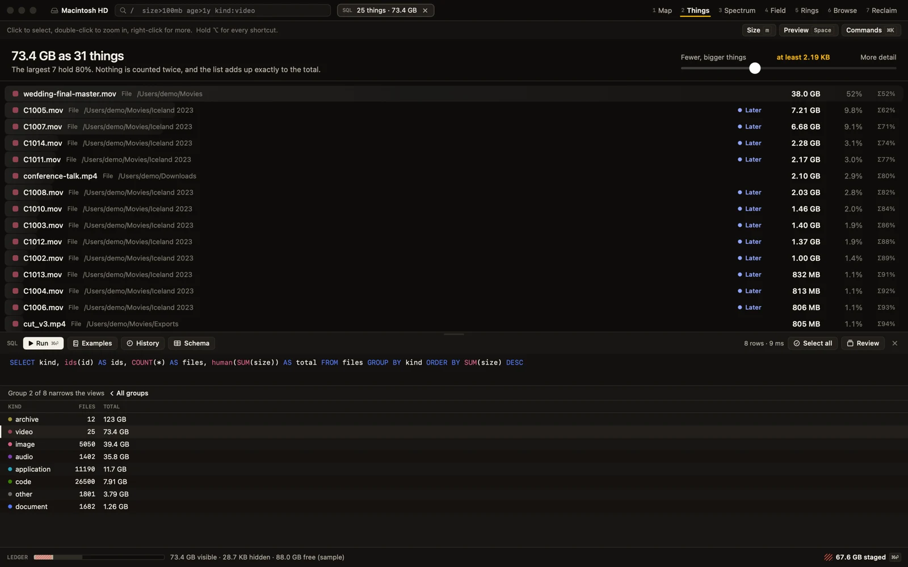
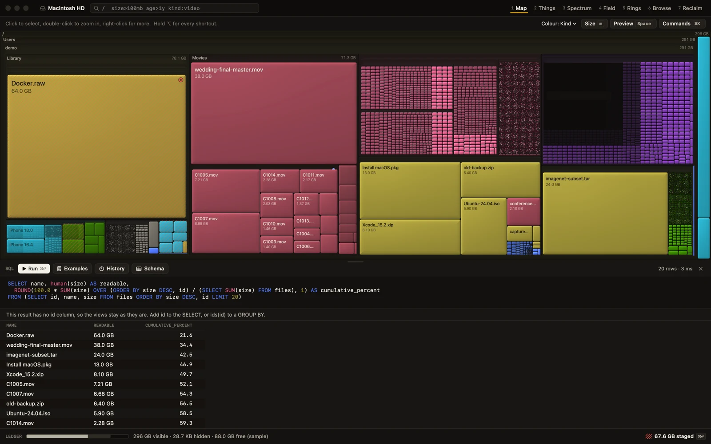

An instrument for your disk.
Seven lenses read the same data and share one selection and one query. Dark only, GPU-drawn on demand, native Swift. Screenshots are the real app on a built-in demo disk.
Where did it all go?
A continuously zoomable treemap with labels on tiles and nested folder headers. Layout is fixed in world space, so zooming never reflows and you keep your bearings. Tiles too small to see merge into a stippled dust tile per folder, labelled with its count and size, and zooming into dust keeps going.
Press m to switch between bytes and file count: swarms that are invisible by bytes become giants by count.

Small files are never dropped.
Most tools drop or grey out small files, which makes the picture quietly wrong. Here they are counted, shown, and resolve into tiles as you zoom. The metric switch makes the point: the same folder by bytes and by file count.

What are the biggest things?
A ranked list cut at a size threshold rather than a depth, with a granularity slider and a cumulative-share rail. Files and folders are peers, the list is disjoint, and it adds up to the total. Details

What shape is my disk? What is old, big and forgotten?
Spectrum shows count and bytes per size range as separate small multiples, plus a cumulative curve that answers "how many items hold 80% of my disk". Field plots every file as a point of light, age against size. Brush either one and the query updates, so it stays visible and editable.

How is it nested? Where is that thing I know?
Rings is a sunburst for structure; read sizes from labels and the hover card. Browse is Miller columns with inline size bars, fully keyboard-driven, for people who think in Finder.

What can I remove safely?
Rule families grouped by tier. Each shows what the place is, what removing it costs, any condition such as "close Xcode first", and the official cleanup command where one exists. Commands are shown, never run. One decision can cover hundreds of items. Duplicates and leftovers of apps that are gone live here too.
Tiers are safe, rebuild, review and never offered, and uncertain always means review. Every rule, with its source

Decide like a photo editor. Apply is a diff.
k keep, x remove, l later, from any view. Review takes the current set full screen with a preview and a backlog that shrinks to zero. Decisions persist across scans, and an item changed after you judged it is flagged and skipped.
Apply opens the Plan: the exact roots to move to the Trash, what is protected inside them, what is blocked and why, and an honest estimate. One step undoes it. The scan root, your home folder, system folders and protected items can never be planned for removal.

Every byte accounted for.
One bar for the whole volume: visible, hidden, unreadable, free. Hidden never means gone: ignore rules hide things from views but not from accounting, and the Ledger shows what each rule hides. Click it for the reconciliation: logical against allocated, hard-link and clone savings, snapshots and purgeable space, and a labelled remainder, including why the total differs from Finder.

Ask a question. Every view answers.
Press s for the SQL drawer. A result with an id column becomes the set that Map, Things, Spectrum, Field and Rings all show: SELECT id ... LIMIT 20 turns each of them into just those 20 files. Add ids(id) to a GROUP BY and you can click a group to narrow to it. Without an id the result is a table and the views stay as they are.
It is SQLite's SELECT dialect and it is read-only: writes are refused, and SQL never marks or removes anything. Marks still go through selection and k x l u. Folders bring their whole subtree, and results combine with the / query. SQL in the docs


A group is a click away from a view.
Measured in a release build on a synthetic disk of 4,856,132 items, on one machine: a group by kind with a sum and a count took 729 ms, a filter and sort for the top 100 took 173 ms, and a group by extension with ids took 1,282 ms. Sixteen write attempts are refused in the tests. All five figures

One language everywhere.
/ opens the query. size>100mb age>1y kind:video -path:Photos safe:safe filters every lens live. ⌘K runs any command and jumps to an exact path. Query language

Look before you decide.
Space opens a pane from any lens: video with a filmstrip scrubber, images decoded to screen size, audio waveforms, PDFs, text, and QuickLook for the rest. iCloud placeholders are never downloaded by accident; you get metadata and a Download button. Reading a file never changes it.